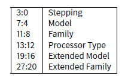

第二十一章
结构体
C/C++的结构体可以这么定义：它是一组存储在内存中的变量的集合，成员变量类型不要求相同。
21.1 SYSTEMTIME 的例子
让我们看看Win32结构体SYSTEMTIME的定义：
清单21.1: WinBase.h
typedef struct _SYSTEMTIME {
WORD wYear;
WORD wMonth;
WORD wDayOfWeek;
WORD wDay;
WORD wHour;
WORD wMinute;
WORD wSecond;
WORD wMilliseconds;
} SYSTEMTIME, *PSYSTEMTIME;
让我们写一个获取当前时间的C程序：
#include <windows.h>
#include <stdio.h>
void main()
{
SYSTEMTIME t;
GetSystemTime(&t);
printf ("%04d-%02d-%02d %02d:%02d:%02d",
t.wYear, t.wMonth, t.wDay,
t.wHour, t.wMinute, t.wSecond);
return;
};
反汇编结果如下（MSVC 2010）：
清单21.2: MSVC 2010
_t$ = -16 ; size = 16
_main PROC
push ebp
mov ebp, esp
sub esp, 16 ; 00000010H
lea eax, DWORD PTR _t$[ebp]
push eax
call DWORD PTR __imp__GetSystemTime@4
movzx ecx, WORD PTR _t$[ebp+12] ; wSecond
push ecx
movzx edx, WORD PTR _t$[ebp+10] ; wMinute
push edx
movzx eax, WORD PTR _t$[ebp+8] ; wHour
push eax
movzx ecx, WORD PTR _t$[ebp+6] ; wDay
push ecx
movzx edx, WORD PTR _t$[ebp+2] ; wMonth
push edx
movzx eax, WORD PTR _t$[ebp] ; wYear
push eax
push OFFSET $SG78811 ; ’%04d-%02d-%02d %02d:%02d:%02d’, 0aH, 00H
call _printf
add esp, 28 ; 0000001cH
xor eax, eax
mov esp, ebp
pop ebp
ret 0
_main ENDP
在本地栈上程序为这个结构体分配了16个字节：这正是sizeof(WORD)*8的大小（因为结构体里有8个WORD）。 请注意结构体是由wYear开始的，因此，我们既可以说这是“传给GetSystemTime()函数的，一个指向SYSTEMTIME结构体的指针”，也可以说是它“传递了wYear的指针”。这两种说法是一样的！GetSystemTime()函数会把当前的年份写入指向的WORD指针中，然后把指针向后移动2个字节（译注：WORD大小为2字节），再写入月份，以此类推。
21.1.1 OllyDbg
21.1.2 用结构体代替数组
事实上，结构体的成员其实就是一个个紧贴在一起的变量。我可以用下面的方法来访问SYSTEMTIME结构体，代码如下：
#include <windows.h>
#include <stdio.h>
void main()
{
WORD array[8];
GetSystemTime (array);
printf ("%04d-%02d-%02d %02d:%02d:%02d",
array[0] /* wYear */, array[1] /* wMonth */, array[3] /* wDay */,
array[4] /* wHour */, array[5] /* wMinute */, array[6] /* wSecond */);
return;
};
编译器会稍稍给出一点警告：
systemtime2.c(7) : warning C4133: ’function’ : incompatible types - from ’WORD [8]’ to ’LPSYSTEMTIME’
不过至少，它会产生如下代码：
清单21.3: MSVC 2010
$SG78573 DB ’%04d-%02d-%02d %02d:%02d:%02d’, 0aH, 00H
_array$ = -16 ; size = 16
_main PROC
push ebp
mov ebp, esp
sub esp, 16 ; 00000010H
lea eax, DWORD PTR _array$[ebp]
push eax
call DWORD PTR __imp__GetSystemTime@4
movzx ecx, WORD PTR _array$[ebp+12] ; wSecond
push ecx
movzx edx, WORD PTR _array$[ebp+10] ; wMinute
push edx
movzx eax, WORD PTR _array$[ebp+8] ; wHoure
push eax
movzx ecx, WORD PTR _array$[ebp+6] ; wDay
push ecx
movzx edx, WORD PTR _array$[ebp+2] ; wMonth
push edx
movzx eax, WORD PTR _array$[ebp] ; wYear
push eax
push OFFSET $SG78573
call _printf
add esp, 28 ; 0000001cH
xor eax, eax
mov esp, ebp
pop ebp
ret 0
_main ENDP
当然，它也能一样正常工作！ 一个很有趣的情况是这两次编译结果居然一样，所以光看编译结果，我们还看不出来到底别人用的结构体还是单单用的变量数组。 不过，没几个人会这么无聊的用这种方法写代码，因为这太麻烦了。还有，结构体也有可能会被开发者更改，交换，等等，所以还是用结构体方便。
21.2 让我们用malloc()为结构体分配空间
但是，有时候把结构体放在堆中而不是栈上却更简单：
#include <windows.h>
#include <stdio.h>
void main()
{
SYSTEMTIME *t;
t=(SYSTEMTIME *)malloc (sizeof (SYSTEMTIME));
GetSystemTime (t);
printf ("%04d-%02d-%02d %02d:%02d:%02d",
t->wYear, t->wMonth, t->wDay,
t->wHour, t->wMinute, t->wSecond);
free (t);
return;
};
让我们用优化/Ox编译一下它，看看我们得到什么东西
清单21.4: 优化的MSVC
_main PROC
push esi
push 16 ; 00000010H
call _malloc
add esp, 4
mov esi, eax
push esi
call DWORD PTR __imp__GetSystemTime@4
movzx eax, WORD PTR [esi+12] ; wSecond
movzx ecx, WORD PTR [esi+10] ; wMinute
movzx edx, WORD PTR [esi+8] ; wHour
push eax
movzx eax, WORD PTR [esi+6] ; wDay
push ecx
movzx ecx, WORD PTR [esi+2] ; wMonth
push edx
movzx edx, WORD PTR [esi] ; wYear
push eax
push ecx
push edx
push OFFSET $SG78833
call _printf
push esi
call _free
add esp, 32 ; 00000020H
xor eax, eax
pop esi
ret 0
_main ENDP
所以，sizeof(SYSTEMTIME) = 16, 这正是malloc所分配的字节数。它返回了刚刚分配的地址空间，这个指针存在EAX寄存器里。然后，这个指针会被移动到ESI结存器中， GetSystemTime()会用它来存储返回值，这也就是为什么这里分配完之后并没有把EAX放到某个地方保存起来，而是直接使用它的原因。
新指令：MOVZX（Move with Zero eXtent， 0扩展移动）。它可以说是和MOVSX基本一样（13.1.1节），但是，它把其他位都设置为0。这是因为printf()需要一个32位的整数，但是我们的结构体里面是WORD，这只有16位厂。这也就是为什么从WORD复制到INT时第16～31位必须清零的原因了。因为，如果不清除的话，剩余位可能有之前操作留下来的干扰数据。
在下面这个例子里面，我可以用WORD数组来重现这个结构：
#include <windows.h>
#include <stdio.h>
void main()
{
WORD *t;
t=(WORD *)malloc (16);
GetSystemTime (t);
printf ("%04d-%02d-%02d %02d:%02d:%02d",
t[0] /* wYear */, t[1] /* wMonth */, t[3] /* wDay */,
t[4] /* wHour */, t[5] /* wMinute */, t[6] /* wSecond */);
free (t);
return;
};
我们得到：
$SG78594 DB ’%04d-%02d-%02d %02d:%02d:%02d’, 0aH, 00H
_main PROC
push esi
push 16 ; 00000010H
call _malloc
add esp, 4
mov esi, eax
push esi
call DWORD PTR __imp__GetSystemTime@4
movzx eax, WORD PTR [esi+12]
movzx ecx, WORD PTR [esi+10]
movzx edx, WORD PTR [esi+8]
push eax
movzx eax, WORD PTR [esi+6]
push ecx
movzx ecx, WORD PTR [esi+2]
push edx
movzx edx, WORD PTR [esi]
push eax
push ecx
push edx
push OFFSET $SG78594
call _printf
push esi
call _free
add esp, 32 ; 00000020H
xor eax, eax
pop esi
ret 0
_main ENDP
同样，我们可以看到编译结果和之前一样。个人重申一次，你不应该在写代码的时候用这么晦涩的方法来表达它。
21.3 Unix:结构体tm
21.3.1 linux
在Linux下，我们看看time.h中的tm结构体是什么样子的：
#include <stdio.h>
#include <time.h>
void main()
{
struct tm t;
time_t unix_time;
unix_time=time(NULL);
localtime_r (&unix_time, &t);
printf ("Year: %d", t.tm_year+1900);
printf ("Month: %d", t.tm_mon);
printf ("Day: %d", t.tm_mday);
printf ("Hour: %d", t.tm_hour);
printf ("Minutes: %d", t.tm_min);
printf ("Seconds: %d", t.tm_sec);
};
在GCC 4.4.1下编译得到：
清单21.6：GCC 4.4.1
main proc near
push ebp
mov ebp, esp
and esp, 0FFFFFFF0h
sub esp, 40h
mov dword ptr [esp], 0 ; first argument for time()
call time
mov [esp+3Ch], eax
lea eax, [esp+3Ch] ; take pointer to what time() returned
lea edx, [esp+10h] ; at ESP+10h struct tm will begin
mov [esp+4], edx ; pass pointer to the structure begin
mov [esp], eax ; pass pointer to result of time()
call localtime_r
mov eax, [esp+24h] ; tm_year
lea edx, [eax+76Ch] ; edx=eax+1900
mov eax, offset format ; "Year: %d"
mov [esp+4], edx
mov [esp], eax
call printf
mov edx, [esp+20h] ; tm_mon
mov eax, offset aMonthD ; "Month: %d"
mov [esp+4], edx
mov [esp], eax
call printf
mov edx, [esp+1Ch] ; tm_mday
mov eax, offset aDayD ; "Day: %d"
mov [esp+4], edx
mov [esp], eax
call printf
mov edx, [esp+18h] ; tm_hour
mov eax, offset aHourD ; "Hour: %d"
mov [esp+4], edx
mov [esp], eax
call printf
mov edx, [esp+14h] ; tm_min
mov eax, offset aMinutesD ; "Minutes: %d"
mov [esp+4], edx
mov [esp], eax
call printf
mov edx, [esp+10h]
mov eax, offset aSecondsD ; "Seconds: %d"
mov [esp+4], edx ; tm_sec
mov [esp], eax
call printf
leave
retn
main endp
可是，IDA并没有为本地栈上变量建立本地变量名。但是因为我们已经学了汇编了，我们也不需要在这么简单的例子里面如此依赖它。
请也注意一下lea edx, [eax+76ch]，这个指令把eax的值加上0x76c，但是并不修改任何标记位。请也参考LEA的相关章节（B.6.2节）
GDB
为了表现出结构体只是一个个的变量连续排列的东西，让我们重新测试一下这个例子，我们看看time.h： 清单18.7 time.h
struct tm
{
int tm_sec;
int tm_min;
int tm_hour;
int tm_mday;
int tm_mon;
int tm_year;
int tm_wday;
int tm_yday;
int tm_isdst;
};
#include <stdio.h>
#include <time.h>
void main()
{
int tm_sec, tm_min, tm_hour, tm_mday, tm_mon, tm_year, tm_wday, tm_yday, tm_isdst;
time_t unix_time;
unix_time=time(NULL);
localtime_r (&unix_time, &tm_sec);
printf ("Year: %d", tm_year+1900);
printf ("Month: %d", tm_mon);
printf ("Day: %d", tm_mday);
printf ("Hour: %d", tm_hour);
printf ("Minutes: %d", tm_min);
printf ("Seconds: %d", tm_sec);
};
注：指向tm_sec的指针会传递给localtime_r，或者说第一个“结构体”元素。 编译器会这么警告我们
清单18.8 GCC4.7.3
GCC_tm2.c: In function ’main’:
GCC_tm2.c:11:5: warning: passing argument 2 of ’localtime_r’ from incompatible pointer type [
enabled by default]
In file included from GCC_tm2.c:2:0:
/usr/include/time.h:59:12: note: expected ’struct tm *’ but argument is of type ’int *’
但是至少，它会生成这段代码：
清单18.9 GCC 4.7.3
main proc near
var_30 = dword ptr -30h
var_2C = dword ptr -2Ch
unix_time = dword ptr -1Ch
tm_sec = dword ptr -18h
tm_min = dword ptr -14h
tm_hour = dword ptr -10h
tm_mday = dword ptr -0Ch
tm_mon = dword ptr -8
tm_year = dword ptr -4
push ebp
mov ebp, esp
and esp, 0FFFFFFF0h
sub esp, 30h
call __main
mov [esp+30h+var_30], 0 ; arg 0
mov [esp+30h+unix_time], eax
lea eax, [esp+30h+tm_sec]
mov [esp+30h+var_2C], eax
lea eax, [esp+30h+unix_time]
mov [esp+30h+var_30], eax
call localtime_r
mov eax, [esp+30h+tm_year]
add eax, 1900
mov [esp+30h+var_2C], eax
mov [esp+30h+var_30], offset aYearD ; "Year: %d"
call printf
mov eax, [esp+30h+tm_mon]
mov [esp+30h+var_2C], eax
mov [esp+30h+var_30], offset aMonthD ; "Month: %d"
call printf
mov eax, [esp+30h+tm_mday]
mov [esp+30h+var_2C], eax
mov [esp+30h+var_30], offset aDayD ; "Day: %d"
call printf
mov eax, [esp+30h+tm_hour]
mov [esp+30h+var_2C], eax
mov [esp+30h+var_30], offset aHourD ; "Hour: %d"
call printf
mov eax, [esp+30h+tm_min]
mov [esp+30h+var_2C], eax
mov [esp+30h+var_30], offset aMinutesD ; "Minutes: %d"
call printf
mov eax, [esp+30h+tm_sec]
mov [esp+30h+var_2C], eax
mov [esp+30h+var_30], offset aSecondsD ; "Seconds: %d"
call printf
leave
retn
main endp
这个代码和我们之前看到的一样，依然无法分辨出源代码是用了结构体还是只是数组而已。
当然这样也是可以运行的，但是实际操作中还是不建议用这种晦涩的方法。因为通常，编译器会在栈上按照声明顺序分配变量空间，但是并不能保证每次都是这样。
还有，其他编译器可能会警告tm_year,tm_mon, tm_mday, tm_hour, tm_min变量而不是tm_sec使用时未初始化。事实上，计算机并不知道调用localtime_r()的时候他们会被自动填充上。
我选择了这个例子来解释是因为他们都是int类型的，而SYSTEMTIME的所有成员是16位的WORD，如果把它们作为本地变量来声明的话，他们会按照32位的边界值来对齐，因此什么都用不了了（因为由于数据对齐，此时GetSystemTime()会把它们错误的填充起来）。请继续读下一节的内容：“结构体的成员封装”。
所以，结构体只是把一组变量封装到一个位置上，数据是一个接一个的。我可以说结构体是一个语法糖，因为它只是用来让编译器把一组变量保存在一个地方。但是，我不是编程方面的专家，所以更有可能的是，我可能会误读这个术语。还有，在早期（1972年以前）的时候，C是不支持结构体的。
21.3.2 ARM
ARM+优化Keil+thumb模式
同样的例子： 清单21.10： 优化Keil+thumb模式
var_38 = -0x38
var_34 = -0x34
var_30 = -0x30
var_2C = -0x2C
var_28 = -0x28
var_24 = -0x24
timer = -0xC
PUSH {LR}
MOVS R0, #0 ; timer
SUB SP, SP, #0x34
BL time
STR R0, [SP,#0x38+timer]
MOV R1, SP ; tp
ADD R0, SP, #0x38+timer ; timer
BL localtime_r
LDR R1, =0x76C
LDR R0, [SP,#0x38+var_24]
ADDS R1, R0, R1
ADR R0, aYearD ; "Year: %d"
BL __2printf
LDR R1, [SP,#0x38+var_28]
ADR R0, aMonthD ; "Month: %d"
BL __2printf
LDR R1, [SP,#0x38+var_2C]
ADR R0, aDayD ; "Day: %d"
BL __2printf
LDR R1, [SP,#0x38+var_30]
ADR R0, aHourD ; "Hour: %d"
BL __2printf
LDR R1, [SP,#0x38+var_34]
ADR R0, aMinutesD ; "Minutes: %d"
BL __2printf
LDR R1, [SP,#0x38+var_38]
ADR R0, aSecondsD ; "Seconds: %d"
BL __2printf
ADD SP, SP, #0x34
POP {PC}
ARM+优化Xcode（LLVM）+thumb-2模式
IDA“碰巧知道”tm结构体（因为IDA“知道”例如localtime_r()这些库函数的参数类型），所以他把这里的结构变量的名字也显示出来了。
var_38 = -0x38
var_34 = -0x34
PUSH {R7,LR}
MOV R7, SP
SUB SP, SP, #0x30
MOVS R0, #0 ; time_t *
BLX _time
ADD R1, SP, #0x38+var_34 ; struct tm *
STR R0, [SP,#0x38+var_38]
MOV R0, SP ; time_t *
BLX _localtime_r
LDR R1, [SP,#0x38+var_34.tm_year]
MOV R0, 0xF44 ; "Year: %d"
ADD R0, PC ; char *
ADDW R1, R1, #0x76C
BLX _printf
LDR R1, [SP,#0x38+var_34.tm_mon]
MOV R0, 0xF3A ; "Month: %d"
ADD R0, PC ; char *
BLX _printf
LDR R1, [SP,#0x38+var_34.tm_mday]
MOV R0, 0xF35 ; "Day: %d"
ADD R0, PC ; char *
BLX _printf
LDR R1, [SP,#0x38+var_34.tm_hour]
MOV R0, 0xF2E ; "Hour: %d"
ADD R0, PC ; char *
BLX _printf
LDR R1, [SP,#0x38+var_34.tm_min]
MOV R0, 0xF28 ; "Minutes: %d"
ADD R0, PC ; char *
BLX _printf
LDR R1, [SP,#0x38+var_34]
MOV R0, 0xF25 ; "Seconds: %d"
ADD R0, PC ; char *
BLX _printf
ADD SP, SP, #0x30
POP {R7,PC}
...
00000000 tm struc ; (sizeof=0x2C, standard type)
00000000 tm_sec DCD ?
00000004 tm_min DCD ?
00000008 tm_hour DCD ?
0000000C tm_mday DCD ?
00000010 tm_mon DCD ?
00000014 tm_year DCD ?
00000018 tm_wday DCD ?
0000001C tm_yday DCD ?
00000020 tm_isdst DCD ?
00000024 tm_gmtoff DCD ?
00000028 tm_zone DCD ? ; offset
0000002C tm ends
清单21.11： ARM+优化Xcode（LLVM）+thumb-2模式
21.3.3 MIPS
21.3.4 将结构体作为一组值
21.3.5 讲结构体作为一个32位的数组
21.3.6 讲结构体作为bit的数组
21.4 结构体的成员封装
结构体做的一个重要的事情就是封装了成员，让我们看看简单的例子：
#include <stdio.h>
struct s
{
char a;
int b;
char c;
int d;
};
void f(struct s s)
{
printf ("a=%d; b=%d; c=%d; d=%d", s.a, s.b, s.c, s.d);
};
如我们所看到的，我们有2个char成员（每个1字节），和两个int类型的数据（每个4字节）。
x86
编译后得到：
_s$ = 8 ; size = 16
?f@@YAXUs@@@Z PROC ; f
push ebp
mov ebp, esp
mov eax, DWORD PTR _s$[ebp+12]
push eax
movsx ecx, BYTE PTR _s$[ebp+8]
push ecx
mov edx, DWORD PTR _s$[ebp+4]
push edx
movsx eax, BYTE PTR _s$[ebp]
push eax
push OFFSET $SG3842
call _printf
add esp, 20 ; 00000014H
pop ebp
ret 0
?f@@YAXUs@@@Z ENDP ; f
_TEXT ENDS
如我们所见，每个成员的地址都按4字节对齐了，这也就是为什么char也会像int一样占用4字节。为什么？因为对齐后对CPU来说更容易读取数据。
但是，这么看明显浪费了一些空间。 让我们能用/Zp1（/Zp[n]代表结构体边界值为n字节）来编译它：
清单18.12: MSVC /Zp1
_TEXT SEGMENT
_s$ = 8 ; size = 10
?f@@YAXUs@@@Z PROC ; f
push ebp
mov ebp, esp
mov eax, DWORD PTR _s$[ebp+6]
push eax
movsx ecx, BYTE PTR _s$[ebp+5]
push ecx
mov edx, DWORD PTR _s$[ebp+1]
push edx
movsx eax, BYTE PTR _s$[ebp]
push eax
push OFFSET $SG3842
call _printf
add esp, 20 ; 00000014H
pop ebp
ret 0
?f@@YAXUs@@@Z ENDP ; f
现在，结构体只用了10字节，而且每个char都占用1字节。我们得到了最小的空间，但是反过来看，CPU却无法用最优化的方式存取这些数据。 可以容易猜到的是，如果这个结构体在很多源代码和对象中被使用的话，他们都需要用同一种方式来编译起来。 除了MSVC /Zp选项，还有一个是#pragma pack编译器选项可以在源码中定义边界值。这个语句在MSVC和GCC中均被支持。 回到SYSTEMTIME结构体中的16位成员，我们的编译器怎么才能把它们按1字节边界来打包？ WinNT.h有这么个代码：
清单18.13:WINNT.H
#include "pshpack1.h"
和这个：
清单18.14:WINNT.H
#include "pshpack4.h" // 4 byte packing is the default
文件PshPack1.h看起来像
清单18.15: PSHPACK1.H
#if ! (defined(lint) || defined(RC_INVOKED))
#if ( _MSC_VER >= 800 && !defined(_M_I86)) || defined(_PUSHPOP_SUPPORTED)
#pragma warning(disable:4103)
#if !(defined( MIDL_PASS )) || defined( __midl )
#pragma pack(push,1)
#else
#pragma pack(1)
#endif
#else
#pragma pack(1)
#endif
#endif /* ! (defined(lint) || defined(RC_INVOKED)) */
这就是#pragma pack处理结构体大小的方法。
OllyDbg + fields are packed by default
OllyDbg + fields aligning on 1 byte boundary
21.4.2 ARM
ARM+优化Keil+thumb模式
清单18.16
.text:0000003E exit ; CODE XREF: f+16
.text:0000003E 05 B0 ADD SP, SP, #0x14
.text:00000040 00 BD POP {PC}
.text:00000280 f
.text:00000280
.text:00000280 var_18 = -0x18
.text:00000280 a = -0x14
.text:00000280 b = -0x10
.text:00000280 c = -0xC
.text:00000280 d = -8
.text:00000280
.text:00000280 0F B5 PUSH {R0-R3,LR}
.text:00000282 81 B0 SUB SP, SP, #4
.text:00000284 04 98 LDR R0, [SP,#16] ; d
.text:00000286 02 9A LDR R2, [SP,#8] ; b
.text:00000288 00 90 STR R0, [SP]
.text:0000028A 68 46 MOV R0, SP
.text:0000028C 03 7B LDRB R3, [R0,#12] ; c
.text:0000028E 01 79 LDRB R1, [R0,#4] ; a
.text:00000290 59 A0 ADR R0, aADBDCDDD ; "a=%d; b=%d; c=%d; d=%d
"
.text:00000292 05 F0 AD FF BL __2printf
.text:00000296 D2 E6 B exit
我们可以回忆到的是，这里它直接用了结构体而不是指向结构体的指针，而且因为ARM里函数的前4个参数是通过寄存器传递的，所以结构体其实是通过R0-R3寄存器传递的。
LDRB指令将内存中的一个字节载入，然后把它扩展到32位，同时也考虑它的符号。这和x86架构的MOVSX（参考13.1.1节）基本一样。这里它被用来传递结构体的a、c两个成员。
还有一个我们可以容易指出来的是，在函数的末尾处，这里它没有使用正常的函数尾该有的指令，而是直接跳转到了另一个函数的末尾！ 的确，这是一个相当不同的函数，而且跟我们的函数没有任何关联。但是，他却有着相同的函数结尾（也许是因为他也有5个本地变量（5 x 4 = 0x14））。而且他就在我们的函数附近（看看地址就知道了）。事实上，函数结尾并不重要，只要函数好好执行就行了嘛。显然，Keil决定要重用另一个函数的一部分，原因就是为了优化代码大小。普通函数结尾需要4字节，而跳转指令只要2个字节。
ARM+优化XCode（LLVM）+thumb-2模式
清单18.17: 优化的Xcode （LLVM）+thumb-2模式
var_C = -0xC
PUSH {R7,LR}
MOV R7, SP
SUB SP, SP, #4
MOV R9, R1 ; b
MOV R1, R0 ; a
MOVW R0, #0xF10 ; "a=%d; b=%d; c=%d; d=%d
"
SXTB R1, R1 ; prepare a
MOVT.W R0, #0
STR R3, [SP,#0xC+var_C] ; place d to stack for printf()
ADD R0, PC ; format-string
SXTB R3, R2 ; prepare c
MOV R2, R9 ; b
BLX _printf
ADD SP, SP, #4
POP {R7,PC}
SXTB（Singned Extend Byte，有符号扩展字节）和x86的MOVSX（见13.1.1节）差不多，但是它不是对内存操作的，而是对一个寄存器操作的，至于剩余的——都一样。
21.4.3 MIPS
21.5 嵌套结构
如果一个结构体里定义了另一个结构体会怎么样？
#include <stdio.h>
struct inner_struct
{
int a;
int b;
};
struct outer_struct
{
char a;
int b;
struct inner_struct c;
char d;
int e;
};
void f(struct outer_struct s)
{
printf ("a=%d; b=%d; c.a=%d; c.b=%d; d=%d; e=%d", s.a, s.b, s.c.a, s.c.b, s.d, s.e);
};
在这个例子里，我们把inner_struct放到了outer_struct的abde中间。 让我们在MSVC 2010中编译：
清单18.18： MSVC 2010
_s$ = 8 ; size = 24
_f PROC
push ebp
mov ebp, esp
mov eax, DWORD PTR _s$[ebp+20] ; e
push eax
movsx ecx, BYTE PTR _s$[ebp+16] ; d
push ecx
mov edx, DWORD PTR _s$[ebp+12] ; c.b
push edx
mov eax, DWORD PTR _s$[ebp+8] ; c.a
push eax
mov ecx, DWORD PTR _s$[ebp+4] ; b
push ecx
movsx edx, BYTE PTR _s$[ebp] ;a
push edx
push OFFSET $SG2466
call _printf
add esp, 28 ; 0000001cH
pop ebp
ret 0
_f ENDP
一个令我们好奇的事情是，看看这个反汇编代码，我们甚至不知道它的体内有另一个结构体！因此，我们可以说，嵌套的结构体，最终都会转化为线性的或者一维的结构。 当然，如果我们把struct inner_struct c;换成struct inner_struct *c（因此这里其实是定义个了一个指针），这个情况下状况则会大为不同。
21.5.1 OllyDbg
21.6 结构体中的位
21.6.1 CPUID 的例子
C/C++中允许给结构体的每一个成员都定义一个准确的位域。如果我们想要节省空间的话，这个对我们来说将是非常有用的。比如，对BOOL来说，1位就足矣了。但是当然，如果我们想要速度的话，必然会浪费点空间。 让我们以CPUID指令为例，这个指令返回当前CPU的信息和特性。 如果EAX在指令执行之前就设置为了1，CPUID将会返回这些内容到EAX中。

MSVC 2010有CPUID的宏，但是GCC 4.4.1没有，所以，我们就手动的利用它的内联汇编器为GCC写一个吧。
#include <stdio.h>
#ifdef __GNUC__
static inline void cpuid(int code, int *a, int *b, int *c, int *d) {
asm volatile("cpuid":"=a"(*a),"=b"(*b),"=c"(*c),"=d"(*d):"a"(code));
}
#endif
#ifdef _MSC_VER
#include <intrin.h>
#endif
struct CPUID_1_EAX
{
unsigned int stepping:4;
unsigned int model:4;
unsigned int family_id:4;
unsigned int processor_type:2;
unsigned int reserved1:2;
unsigned int extended_model_id:4;
unsigned int extended_family_id:8;
unsigned int reserved2:4;
};
int main()
{
struct CPUID_1_EAX *tmp;
int b[4];
#ifdef _MSC_VER
__cpuid(b,1);
#endif
#ifdef __GNUC__
cpuid (1, &b[0], &b[1], &b[2], &b[3]);
#endif
tmp=(struct CPUID_1_EAX *)&b[0];
printf ("stepping=%d", tmp->stepping);
printf ("model=%d", tmp->model);
printf ("family_id=%d", tmp->family_id);
printf ("processor_type=%d", tmp->processor_type);
printf ("extended_model_id=%d", tmp->extended_model_id);
printf ("extended_family_id=%d", tmp->extended_family_id);
return 0;
};
之后CPU会填充EAX,EBX,ECX,EDX，这些寄存器的值会通过b[]数组显现出来。接着我们用一个指向CPUID_1_EAX结构体的指针，把它指向b[]数组的EAX值。 换句话说，我们将把32位的INT类型的值当作一个结构体来看。 然后我们就能从结构体中读取数据。
MSVC
让我们在MSVC 2008用/Ox编译一下：
清单18.19: MSVC 2008
_b$ = -16 ; size = 16
_main PROC
sub esp, 16 ; 00000010H
push ebx
xor ecx, ecx
mov eax, 1
cpuid
push esi
lea esi, DWORD PTR _b$[esp+24]
mov DWORD PTR [esi], eax
mov DWORD PTR [esi+4], ebx
mov DWORD PTR [esi+8], ecx
mov DWORD PTR [esi+12], edx
mov esi, DWORD PTR _b$[esp+24]
mov eax, esi
and eax, 15 ; 0000000fH
push eax
push OFFSET $SG15435 ; ’stepping=%d’, 0aH, 00H
call _printf
mov ecx, esi
shr ecx, 4
and ecx, 15 ; 0000000fH
push ecx
push OFFSET $SG15436 ; ’model=%d’, 0aH, 00H
call _printf
mov edx, esi
shr edx, 8
and edx, 15 ; 0000000fH
push edx
push OFFSET $SG15437 ; ’family_id=%d’, 0aH, 00H
call _printf
mov eax, esi
shr eax, 12 ; 0000000cH
and eax, 3
push eax
push OFFSET $SG15438 ; ’processor_type=%d’, 0aH, 00H
call _printf
mov ecx, esi
shr ecx, 16 ; 00000010H
and ecx, 15 ; 0000000fH
push ecx
push OFFSET $SG15439 ; ’extended_model_id=%d’, 0aH, 00H
call _printf
shr esi, 20 ; 00000014H
and esi, 255 ; 000000ffH
push esi
push OFFSET $SG15440 ; ’extended_family_id=%d’, 0aH, 00H
call _printf
add esp, 48 ; 00000030H
pop esi
xor eax, eax
pop ebx
add esp, 16 ; 00000010H
ret 0
_main ENDP
SHR指令将EAX寄存器的值右移位，移出去的值必须被忽略，例如我们会忽略右边的位。 AND指令将清除左边不需要的位，换句话说，它处理过后EAX将只留下我们需要的值。
MSVC + OllyDbg
GCC
让我们在GCC4.4.1下用-O3编译。
清单18.20: GCC 4.4.1
main proc near ; DATA XREF: _start+17
push ebp
mov ebp, esp
and esp, 0FFFFFFF0h
push esi
mov esi, 1
push ebx
mov eax, esi
sub esp, 18h
cpuid
mov esi, eax
and eax, 0Fh
mov [esp+8], eax
mov dword ptr [esp+4], offset aSteppingD ; "stepping=%d"
mov dword ptr [esp], 1
call ___printf_chk
mov eax, esi
shr eax, 4
and eax, 0Fh
mov [esp+8], eax
mov dword ptr [esp+4], offset aModelD ; "model=%d"
mov dword ptr [esp], 1
call ___printf_chk
mov eax, esi
shr eax, 8
and eax, 0Fh
mov [esp+8], eax
mov dword ptr [esp+4], offset aFamily_idD ; "family_id=%d"
mov dword ptr [esp], 1
call ___printf_chk
mov eax, esi
shr eax, 0Ch
and eax, 3
mov [esp+8], eax
mov dword ptr [esp+4], offset aProcessor_type ; "processor_type=%d"
mov dword ptr [esp], 1
call ___printf_chk
mov eax, esi
shr eax, 10h
shr esi, 14h
and eax, 0Fh
and esi, 0FFh
mov [esp+8], eax
mov dword ptr [esp+4], offset aExtended_model ; "extended_model_id=%d"
mov dword ptr [esp], 1
call ___printf_chk
mov [esp+8], esi
mov dword ptr [esp+4], offset unk_80486D0
mov dword ptr [esp], 1
call ___printf_chk
add esp, 18h
xor eax, eax
pop ebx
pop esi
mov esp, ebp
pop ebp
retn
main endp
几乎一样。只有一个需要注意的地方就是GCC在调用每个printf()之前会把extended_model_id和extended_family_id的计算联合到一块去，而不是把它们分开计算。
21.6.2 将浮点数当作结构体看待
我们已经在FPU（15章）中注意到了float和double两个类型都是有符号的，他们分为符号、有效数字和指数部分。但是我们能直接用上这些位嘛？让我们试一试float。
#include <stdio.h>
#include <assert.h>
#include <stdlib.h>
#include <memory.h>
struct float_as_struct
{
unsigned int fraction : 23; // fractional part
unsigned int exponent : 8; // exponent + 0x3FF
unsigned int sign : 1; // sign bit
};
float f(float _in)
{
float f=_in;
struct float_as_struct t;
assert (sizeof (struct float_as_struct) == sizeof (float));
memcpy (&t, &f, sizeof (float));
t.sign=1; // set negative sign
t.exponent=t.exponent+2; // multiple d by 2^n (n here is 2)
memcpy (&f, &t, sizeof (float));
return f;
};
int main()
{
printf ("%f", f(1.234));
};
float_as_struct结构占用了和float一样多的内存空间，也就是4字节，或者说，32位。 现在我们给输入值设置一个负值，然后指数加2，这样我们就能把整个数按照22的值来倍乘，也就是乘以4。 让我们在MSVC2008无优化模式下编译它。
清单18.21: MSVC 2008
_t$ = -8 ; size = 4
_f$ = -4 ; size = 4
__in$ = 8 ; size = 4
?f@@YAMM@Z PROC ; f
push ebp
mov ebp, esp
sub esp, 8
fld DWORD PTR __in$[ebp]
fstp DWORD PTR _f$[ebp]
push 4
lea eax, DWORD PTR _f$[ebp]
push eax
lea ecx, DWORD PTR _t$[ebp]
push ecx
call _memcpy
add esp, 12 ; 0000000cH
mov edx, DWORD PTR _t$[ebp]
or edx, -2147483648 ; 80000000H - set minus sign
mov DWORD PTR _t$[ebp], edx
mov eax, DWORD PTR _t$[ebp]
shr eax, 23 ; 00000017H - drop significand
and eax, 255 ; 000000ffH - leave here only exponent
add eax, 2 ; add 2 to it
and eax, 255 ; 000000ffH
shl eax, 23 ; 00000017H - shift result to place of bits 30:23
mov ecx, DWORD PTR _t$[ebp]
and ecx, -2139095041 ; 807fffffH - drop exponent
or ecx, eax ; add original value without exponent with new calculated exponent
mov DWORD PTR _t$[ebp], ecx
push 4
lea edx, DWORD PTR _t$[ebp]
push edx
lea eax, DWORD PTR _f$[ebp]
push eax
call _memcpy
add esp, 12 ; 0000000cH
fld DWORD PTR _f$[ebp]
mov esp, ebp
pop ebp
ret 0
?f@@YAMM@Z ENDP ; f
有点多余。如果用/Ox编译的话，这里就没有memcpy调用了。f变量会被直接使用，但是没有优化的版本看起来会更容易理解一点。 GCC 4.4.1的-O3选项会怎么做？
清单18.22： Gcc 4.4.1
; f(float)
public _Z1ff
_Z1ff proc near
var_4 = dword ptr -4
arg_0 = dword ptr 8
push ebp
mov ebp, esp
sub esp, 4
mov eax, [ebp+arg_0]
or eax, 80000000h ; set minus sign
mov edx, eax
and eax, 807FFFFFh ; leave only significand and exponent in EAX
shr edx, 23 ; prepare exponent
add edx, 2 ; add 2
movzx edx, dl ; clear all bits except 7:0 in EAX
shl edx, 23 ; shift new calculated exponent to its place
or eax, edx ; add new exponent and original value without exponent
mov [ebp+var_4], eax
fld [ebp+var_4]
leave
retn
_Z1ff endp
public main
main proc near
push ebp
mov ebp, esp
and esp, 0FFFFFFF0h
sub esp, 10h
fld ds:dword_8048614 ; -4.936
fstp qword ptr [esp+8]
mov dword ptr [esp+4], offset asc_8048610 ; "%f
"
mov dword ptr [esp], 1
call ___printf_chk
xor eax, eax
leave
retn
main endp
f()函数基本可以理解，但是有趣的是，GCC可以在编译阶段就通过我们这堆大杂烩一样的代码计算出f(1.234)的值，从而会把他当作参数直接给printf()。